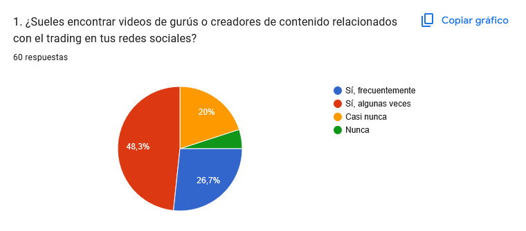
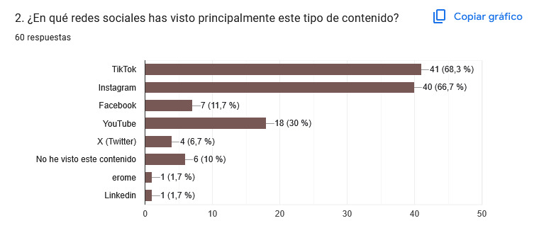
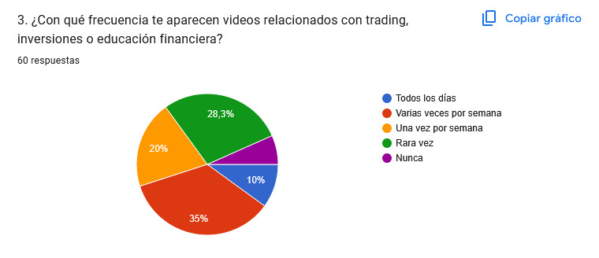
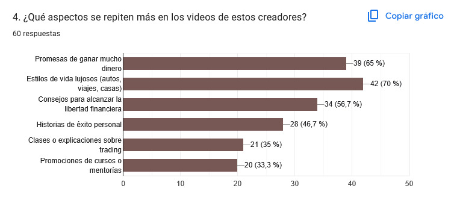
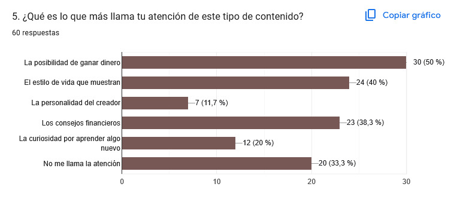
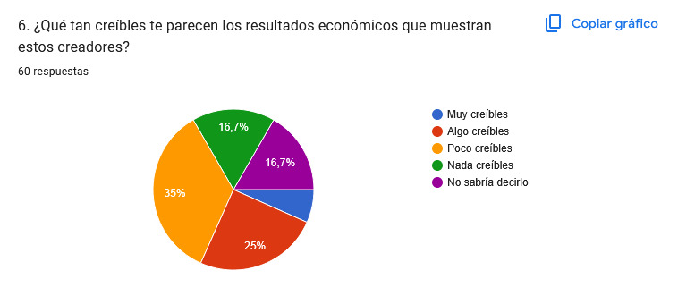
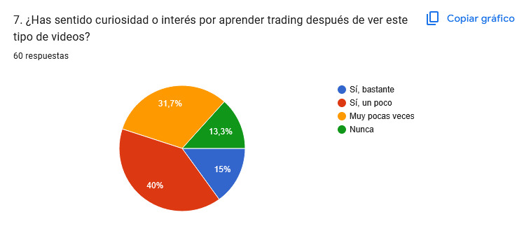
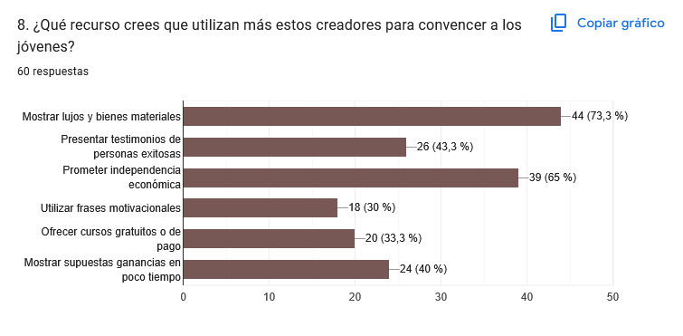
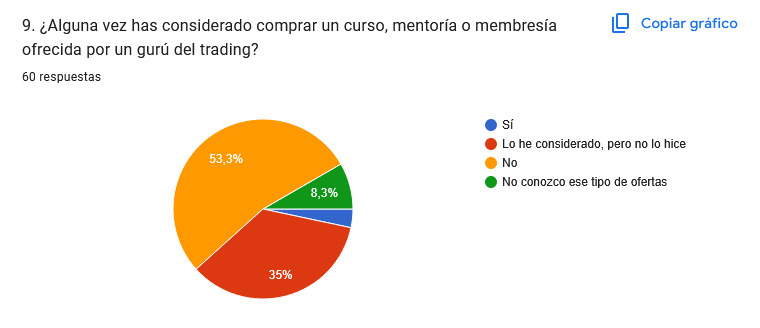

Lo que respondieron 60 jóvenes, lo que comentan los seguidores y lo que nos dijo un trader
Usamos tres técnicas: una encuesta, la observación de comentarios en publicaciones de Instagram y una entrevista. Todo lo que analizamos en la sección de conceptos sale de aquí.
Cómo lo hicimos
Tres técnicas, un mismo caso
Encuesta
60
respuestas de jóvenes universitarios
Cuándo
Del 12 al 19 de noviembre de 2026
Cómo
Formulario de Google con 9 preguntas cerradas
A quién
Jóvenes universitarios, principalmente de la PUCP
Difusión
Grupos de WhatsApp e historias de Instagram del grupo
Observación
18
comentarios de seguidores y 5 respuestas de creadores
Dónde
Publicaciones de Instagram de Llados, El Sensei y Rayan Lewiis
Por qué
Son cuentas conocidas por mostrar lujo y prometer riqueza con el trading o el emprendimiento
Qué
Registramos y clasificamos cada comentario y cada respuesta del creador
Cuándo
Noviembre de 2026
Entrevista
1
especialista: un trader que opera en Wall Street
Quién
Luis Cruz Villegas, analista y gestor de portafolios
Cuándo
19 de noviembre de 2026
Cómo
Videollamada por Zoom, grabada con su consentimiento
Para qué
Contrastar lo que muestran los gurús con la visión de alguien que opera en el mercado
Encuesta · n = 60
La imagen atrae, aunque no se le crea
Redibujamos los nueve gráficos con las cifras exactas del formulario; el original de Google Forms está debajo de cada uno. En las preguntas de varias respuestas los porcentajes suman más de 100 %. Pasa el cursor por una barra para ver su lectura.
PREGUNTA 1 · UNA RESPUESTA
¿Sueles encontrar videos de gurús o creadores de contenido relacionados con el trading en tus redes sociales?
El 75 % (45 de 60) los encuentra en sus redes, frecuentemente o algunas veces.
Ver el gráfico original de Google Forms

PREGUNTA 2 · VARIAS RESPUESTAS
¿En qué redes sociales has visto principalmente este tipo de contenido?
TikTok (68,3 %) e Instagram (66,7 %), dos plataformas que funcionan por recomendación algorítmica, concentran el contenido.
Ver el gráfico original de Google Forms

PREGUNTA 3 · UNA RESPUESTA
¿Con qué frecuencia te aparecen videos relacionados con trading, inversiones o educación financiera?
Al 45 % le aparecen todos los días o varias veces por semana.
Ver el gráfico original de Google Forms

PREGUNTA 4 · VARIAS RESPUESTAS
¿Qué aspectos se repiten más en los videos de estos creadores?
Lo que más se repite es el lujo (70 %) y las promesas de dinero (65 %). Las clases sobre trading quedan en 35 %.
Ver el gráfico original de Google Forms

PREGUNTA 5 · VARIAS RESPUESTAS
¿Qué es lo que más llama tu atención de este tipo de contenido?
Atrae la posibilidad de ganar dinero (50 %) y el estilo de vida (40 %). La personalidad del creador, solo al 11,7 %.
Ver el gráfico original de Google Forms

PREGUNTA 6 · UNA RESPUESTA
¿Qué tan creíbles te parecen los resultados económicos que muestran estos creadores?
Solo el 31,7 % los cree creíbles. El 51,7 % los ve poco o nada creíbles y el 16,7 % no sabría decirlo.
Ver el gráfico original de Google Forms

PREGUNTA 7 · UNA RESPUESTA
¿Has sentido curiosidad o interés por aprender trading después de ver este tipo de videos?
Aun sin creerles del todo, el 55 % sintió curiosidad por aprender trading.
Ver el gráfico original de Google Forms

PREGUNTA 8 · VARIAS RESPUESTAS
¿Qué recurso crees que utilizan más estos creadores para convencer a los jóvenes?
Para los jóvenes, convencen sobre todo mostrando lujos (73,3 %) y prometiendo independencia económica (65 %).
Ver el gráfico original de Google Forms

PREGUNTA 9 · UNA RESPUESTA
¿Alguna vez has considerado comprar un curso, mentoría o membresía ofrecida por un gurú del trading?
El 38,3 % lo consideró o lo compró (3,3 %), aunque la mayoría no cree en los resultados.
Ver el gráfico original de Google Forms

Observación · Instagram
El interés se expresa en público y se cierra en privado
Capturas de los comentarios en publicaciones de las tres cuentas observadas.
LladosAdmiración e identificación: «GRANDE LLADOS», «Felicidades por lograr lo que muchos desean».El SenseiLujo en pantalla y un testimonio con 18 «me gusta». Al «Quiero aprender», el autor responde «Ya lo tienes».Rayan LewiisTres «quiero empezar» y tres respuestas del autor que llevan la conversación al mensaje privado.
CLASIFICACIÓN DE LOS 18 COMENTARIOS DE SEGUIDORES
Más de la mitad pide entrar
Ninguna de las 5 respuestas de los creadores resuelve la duda en público: todas invitan a seguir por privado o a «escribir la palabra».
«Pasa esos trucos»6 632«me gusta»Comentario registrado en la observación; está transcrito porque no quedó en las capturas del grupo.
LA CADENA DE ENGANCHE
El video muestra el éxito
Autos de lujo, gestos de gratitud, promesas de libertad financiera.
El seguidor pide entrar en públicoQuiero empezar!! 💗privv_jakiga · 39 «me gusta»
El creador lo lleva al privadoEso es! Escríbeme al privado y lo vemos 💪rayanlewiis · Autor · 28 «me gusta»
La venta ocurre donde no se ve
No tuvimos acceso a los mensajes privados ni a los precios.
Cursos, señales y más cursos
Según la entrevista: primero capacitaciones, luego grupos de alertas y después más talleres, siempre un paso por detrás del supuesto experto.
Entrevista
Lo que los gurús no muestran, visto desde el mercado
Entrevista editada por el grupo · 4 min 56 s · Zoom, 19 de noviembre de 2026.
Ideas centrales de la entrevista
El dinero de los gurús no sale del mercado: sale de vender cursos y acceso a grupos de señales.
Ver a alguien manejando un Ferrari no significa que sea suyo. El trader profesional se forma durante años y con certificaciones.
Dos grupos de WhatsApp: a uno le manda «compra» y al otro «venta». Así siempre tiene una señal «acertada».
Las tres ideas resumen lo que dice el entrevistado; sus palabras exactas están en el video.
Contraste documental
Lo que dicen los reguladores y la prensa
Fuentes que usamos para contrastar lo observado. Los casos judiciales citados son acusaciones o investigaciones, no condenas.
SMV6 mar 2021
Ninguna empresa en el Perú está autorizada para ofrecer públicamente productos Forex o CFD, y se publicitan por internet, redes sociales y eventos, «inclusive educativos».
Los finfluencers orientan sobre todo a jóvenes con poca experiencia; venden cursos y membresías, y pueden reforzar sesgos como el exceso de confianza o el efecto de anclaje, más aún con la personalización algorítmica.
El profesor de Finanzas Enrique Castellanos advierte sobre los cursos «mágicos» para hacerse trader: prometen enseñar a operar en pocas horas, pero buscan vender cursos costosos.